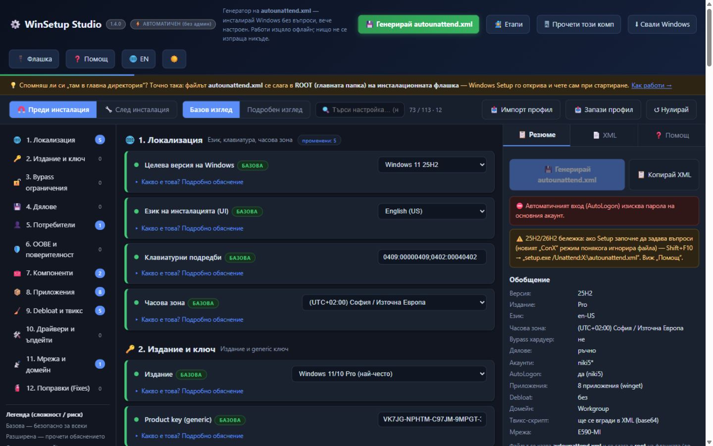
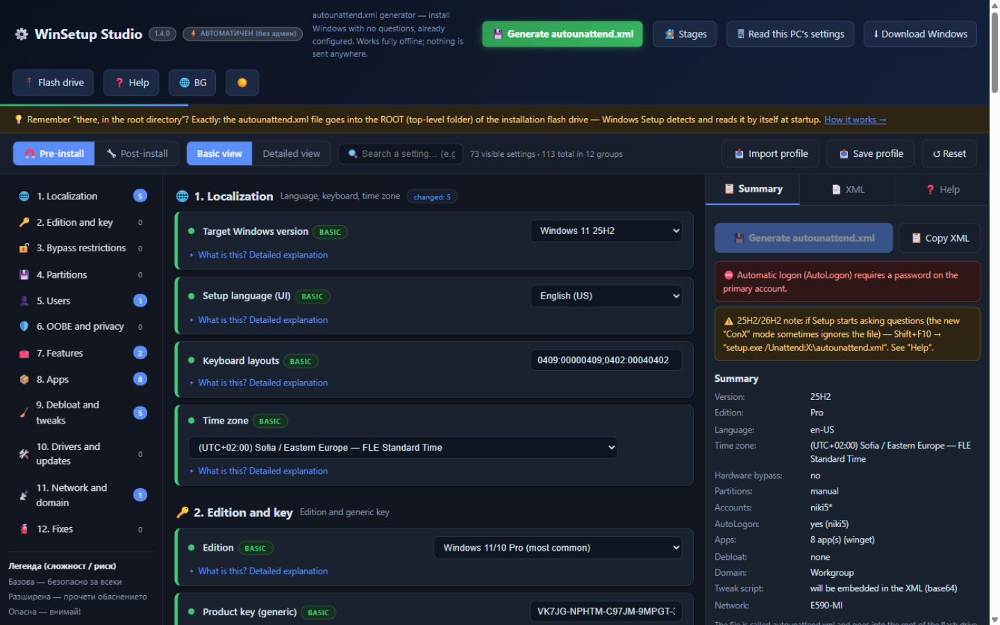
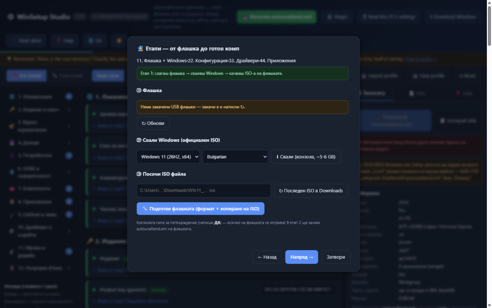

Три изгледа на инструмента: главният конфигуратор (BG), английската версия и 🧙 Магьосникът с 4-те етапа.

11 групи настройки с 🟢/🟠/🔴 етикети, обяснения „Какво е това?“, жив XML preview и Резюме с проверки. Часовата зона вече е с разбираем етикет.

Пълният каталог преведен на английски (Localization, Target Windows version, Time zone…). Превключвател 🌐 в header-а, изборът се запомня.

4 етапа: ① Флашка + сваляне на официален Windows ISO → ② конфигурация (autounattend.xml, качване на флашката) → ③ драйвери в \drivers → ④ приложения + финално обновяване.